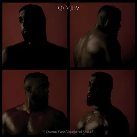

Bem vindo, site dedicado ao
Baco Exu do Blues
Diogo Álvaro Ferreira Moncorvo, mais conhecido como Baco Exu do Blues, é um rapper, cantor e compositor brasileiro.
Diogo Álvaro Ferreira Moncorvo, mais conhecido como Baco Exu do Blues, é um rapper, cantor e compositor brasileiro.
Baco passou a maior parte da vida em Salvador, mas viveu até os 7 anos em Alagoinhas, a 100 quilômetros da capital.
Na adolescência, Baco começou a frequentar batalhas de MCs e se juntou ao grupo de rap D.D.H. (Direto do Hospício). Em 2016, aos 19, quando estava quase desistindo da carreira, deu seu último “tiro” e abalou a cena do rap nacional com o lançamento da música “Sulicídio”
Aos 27 anos, o baiano é um dos nomes mais influentes do rap nacional e, além de usar sua música para escancarar várias faces do racismo, reivindica o direito de falar sobre amor, tristeza e fragilidades. “Quando a gente fala sobre música negra, pensam em luta, no personagem agressivo. As pessoas têm que entender que qualquer ato normal para um negro é um tipo de luta”, defende.
"Sempre que escrevo, tô muito perto de me matar”
Para Baco, todo negro sofre de depressão. Há dois anos, ele se deu conta da sua e decidiu falar abertamente sobre isso em entrevistas e nas letras dos dois discos que lançou desde então. “Isso é um pedido de socorro/Você está aplaudindo/Eu tô me matando, porra!”, canta em “En tu mira”, faixa de Esú (2017). E em várias outras músicas onde rettrata isso e outros problemas de forma metafótica, como em " Me Desculpa Jay Z" que diz sobre um surto bipolar ou "Girassóis de Van gogh" que fala sobre a ansiedade